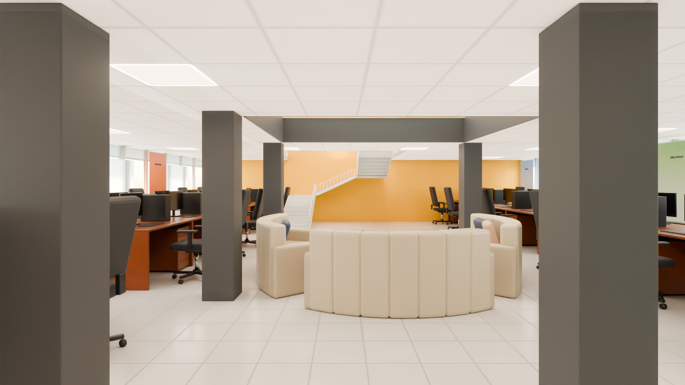
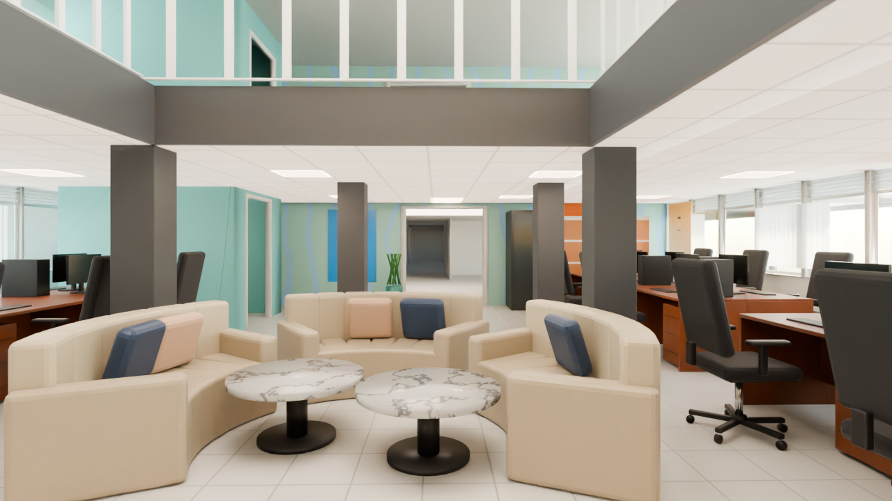
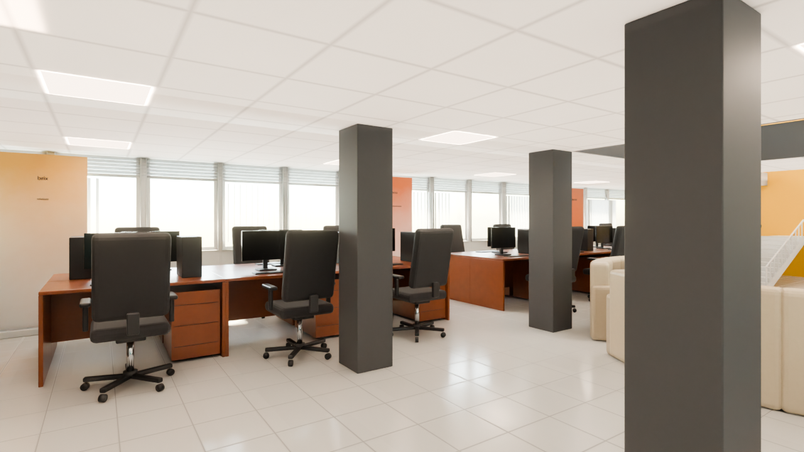
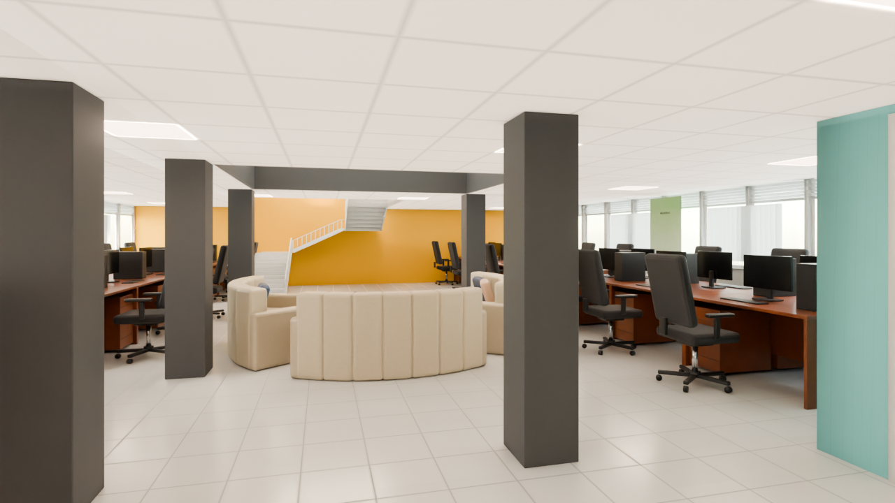

Founder Space 1 — National ICT Innovation Hub
Ground floor, east of the Reception. A large open-plan co-working hall: rows of mahogany desks with black executive chairs, a lounge of curved beige leather sofas with two marble tables, grey columns, glazing with vertical blinds on both long sides (north and south), the dog-leg stair to the mezzanine in the east, and the Reception doorway in the mint mural wall to the west. Furniture at real scale; what does not fit is listed below.
Zone: X +3.80..+18.82, Y -3.28..+7.86 (clear 14.82 x 10.93 m between the faces), soffit 2.14 m, open void X 10.12..13.04 Y 0.56..4.21 and stair well to the upper floor. Each angle: the reference photo, the shell (model with materials and light only) and the furnished scene. The original meshes are untouched; no render contains people.
3 draft1 final
Zone check and photo mapping
high confidence - matches the plan within 0.3 mRay casts on the GLB: west wall X +3.90 (shared with the Reception, open doorway Y +2.30..+3.94, head 2.07 m, no leaf), east wall X +18.72, north glazing Y +7.75 and south glazing Y -3.18 (dado to 0.87 m, glass 0.97 m to above the soffit, on both long sides), soffit 2.14 m, a dog-leg stair against the east wall X +14.9..+18.7 Y +1.4..+4.5 rising to the upper floor, an open void X +10.1..+13.0 Y +0.6..+4.2, and the 'Meeting Podium 1' booth X +4.85..+7.0 Y -2.55..+0.05. The plan's 'Founder Space 1' box agrees within 0.1 m on every side. The old box (X +3.55..+18.9, Y -3.45..+8.05) reached into the wall thickness on three sides and was tightened. Known differences in the photos: the real mezzanine void is larger than the model's, and the teal booth stands north of the doorway, not south of it as in the model. The model is kept as it is.

| Photo | Where it looks | Angle |
|---|---|---|
| 87 | Down the central aisle to the east: columns, desks, lounge, stair, yellow end wall | 01 |
| 94 / 99 / 103 | West: mint mural wall, Reception door, teal booth, lockers (99 from the south desks, 103 telephoto) | 02 |
| 96 | From the lounge looking west over the sofas and marble tables | 02 |
| 97 / 98 | North-west: desk field, executive chairs, windows with vertical blinds, banners | 03 |
| 61 | Not this room: white training desks, Dell PCs, low ceiling with split ACs, no mezzanine | not used |
| - | From the Reception doorway, toward the south-east | 04 (no photo) |
Down the central aisle, looking east
photo Hub Space-87.jpgFrom inside the Reception doorway: two grey columns, the desk fields left and right, the lounge and the stair at the far end.
 Photo Hub Space-87.jpg
Photo Hub Space-87.jpg
FurnishedFrom the lounge toward the mural wall
photo Hub Space-94.jpg, Hub Space-96.jpg, Hub Space-99.jpg, Hub Space-103.jpgLooking west past the curved sofas and the marble tables to the mint mural wall, the teal meeting booth and the Reception doorway.
 Photo Hub Space-94.jpg
Photo Hub Space-94.jpg
FurnisheddraftThe north desk field and windows
photo Hub Space-97.jpg, Hub Space-98.jpgLooking north-east across the desks and black executive chairs to the window wall with vertical blinds and roll-up banners.
 Photo Hub Space-97.jpg
Photo Hub Space-97.jpg
FurnisheddraftFrom the Reception doorway (no matching photo)
photo no matching photoStanding in the doorway from the Reception, looking south-east across the room.

FurnisheddraftWhat differs from the photos (ranked)
- Not reviewed yet.
Dropped at real scale
| Item | Why |
|---|---|
| Photocopier beside the doorway (photo 103, about 0.60 x 0.65 x 1.0 m) | the gaps beside the Reception doorway are 0.41 m (to the server rack) and 0.65 m (to the blue board); it does not fit at real scale |
| Wooden display cabinet with a glass door, right of the door (photo 94, about 1.0 x 0.5 x 1.9 m) | the mural wall north of the doorway is taken by the server rack and the lockers; the model's booth fills the south side |
| Extra desks beside the aisle columns (photo 94) | they would block the aisle from the Reception doorway to the lounge and stair, which the walk needs |
| Mezzanine gallery, its railing and the pitched roof (photos 87/94) | above the model's 2.14 m soffit; the model's void is only 2.9 x 3.65 m and geometry is never changed (a grey fascia and the clock are added at the void edge) |
| Globe, water bottles, bags, jackets and desk clutter | personal items; they would only add noise |
Free camera
Files and last updated
| File | Kind | Size | Modified |
|---|---|---|---|
| 01_aisle_east_furnished.png | final | 1.3 MB | 2026-10-03 08:13 |
| 02_mural_west_furnished.png | DRAFT | 965.1 KB | 2026-10-03 07:23 |
| 03_windows_north_furnished.png | DRAFT | 903.5 KB | 2026-10-03 07:24 |
| 04_from_doorway_furnished.png | DRAFT | 898.9 KB | 2026-10-03 07:25 |
| tour/index.html | free-camera page | 16.2 KB | 2026-10-03 08:30 |
| walkbaked/index.html | free-camera page | 47.7 KB | 2026-10-03 07:07 |
Render settings
- Room
- Founder Space 1 - X +3.80..+18.82, Y -3.28..+7.86, soffit 2.14 m
- Renderer
- Blender 4.2 LTS, Cycles, CPU only (i5-10505)
- Draft settings
- 1280 x 720, 32 samples, OIDN (finals 1600 x 900, 192 samples)
- Daylight
- Both long sides: two soft panels 4 m outside the north and south glazing, white balanced, plus sky; louvres and vertical blinds
- Ceiling lights
- LED panels 600 x 600 on a 3 m grid, 5000 K, plus a soft ceiling fill
- Tone mapping
- AgX, Medium High Contrast, exposure -0.22 (same as the other rooms)
- Furniture
- Real scale, nothing shrunk
- People
- None, by design